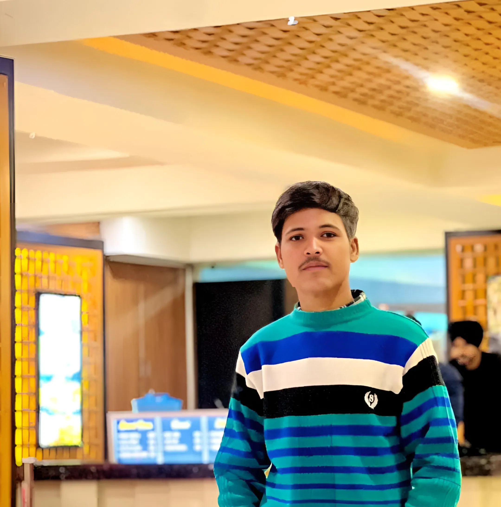

Expert Answers: Website Design & SEO Insights
1. What is the best website design company?
There’s no single “best” website design company that fits everyone — the ideal choice depends on your goals, budget, and style. However, I can share what to look for and suggest a few...
When choosing a website design company, prioritize three things:
- Strategic thinking (not just aesthetics)
- Mobile and SEO optimization
- Conversion-focused design
Many top-tier agencies deliver visually impressive sites, but fail to integrate marketing, performance, and lead generation. That’s where boutique or freelancer-led teams often provide better results...
For instance, I’ve worked with clients across industries to develop custom websites that blend clean UX with strong branding and performance. If you're looking for a blend of design, development, and business strategy, consider agencies with proven results...
Additionally, good agencies should offer more than just design. Services like SEO, social media marketing, and paid ads help ensure your site not only looks great — but also brings real traffic and leads...
For those who prefer working with a dedicated professional rather than a large agency, platforms like Dribbble, Upwork, or even reaching out directly through a freelancer's site can be effective...
In summary, the "best" website design company is the one that understands your brand, goals, and audience. Whether you choose a large firm or a freelancer-led team, focus on value, communication, and long-term growth.
2. How much does a website cost in Bawana?

Website pricing in Bawana depends on features, complexity, and business goals. A basic business website with 5–6 pages can cost around ₹5,000–₹10,000. E-commerce websites range between ₹15,000–₹40,000 depending on features.
Custom development (WordPress, React, or PHP) may vary. I offer affordable packages tailored to small businesses in Bawana, ensuring SEO-friendliness and mobile responsiveness.
3. Why is SEO important for local businesses in Delhi?

SEO helps your business show up on Google when someone searches for services like “website development company in Bawana.” It increases traffic, leads, and credibility. For local Delhi businesses, appearing in local search results is crucial for growth.
I provide local SEO, on-page optimization, and backlink building services to help small businesses grow online without spending big on ads.
4. Freelancer or Agency: Which is better for website design?

If you’re a startup or local service provider, working with a freelancer can be cost-effective and flexible. Agencies have larger teams and more structured workflows but may charge higher prices.
As a freelancer, I offer personalized service, quick turnaround, and multi-skill support (design + SEO + marketing). Choose based on your goals — but always ask for a portfolio, testimonials, and clear deliverables.